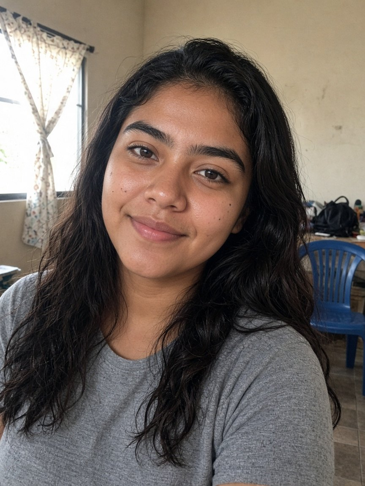
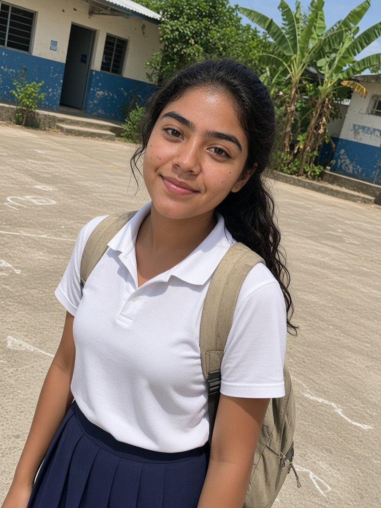
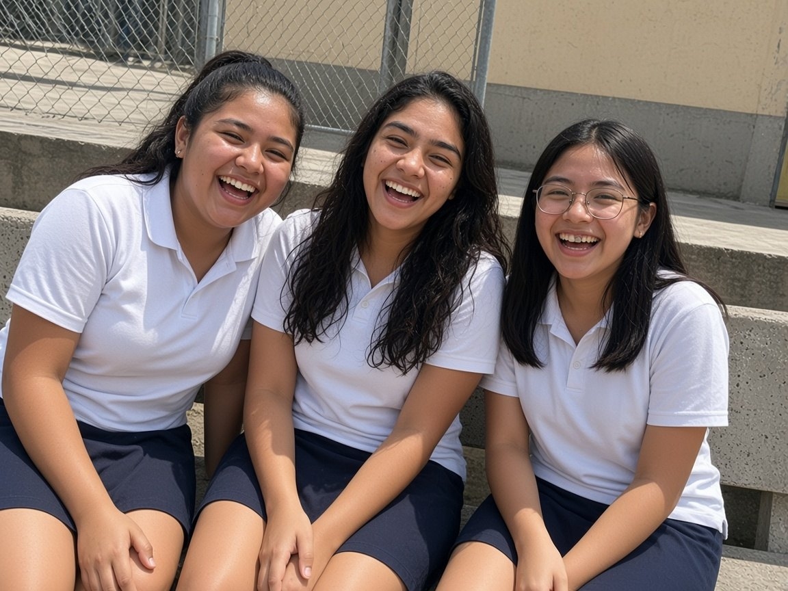
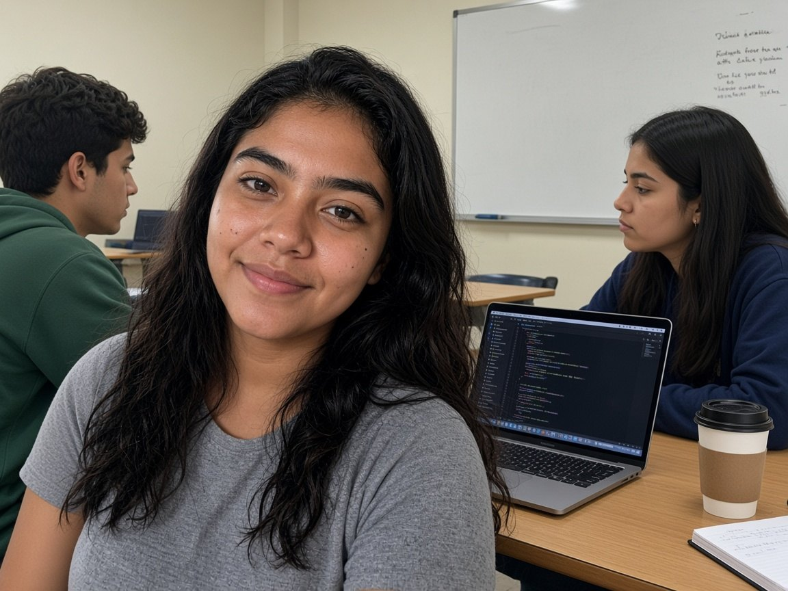
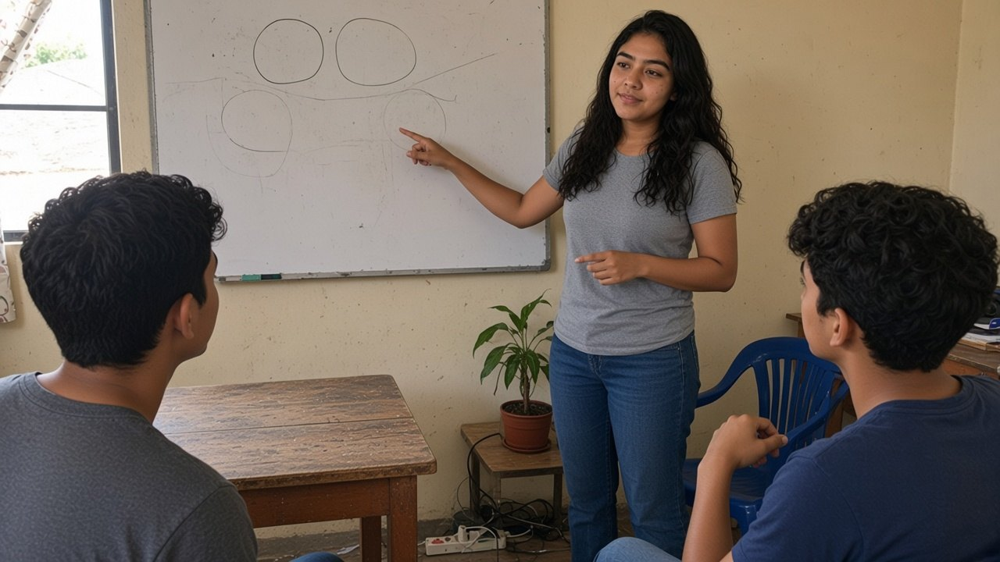

San Miguel, El Salvador
Facultad de Ciencia y Tecnología
Asignatura
Sociología General
Kevin Francisco Muñoz Paniagua
(Lab 1): Biografía colectiva
- Reina Lizbeth Quintanilla Diaz
- Dilcia Raquel Reyes Santos
- Jhoan Mauricio Ortega Ventura
San Miguel, El Salvador
Facultad de Ciencia y Tecnología
Asignatura
Sociología General
Kevin Francisco Muñoz Paniagua
(Lab 1): Biografía colectiva
Biografía colectiva
Lucero. Cada parte nombra una institución y el modo en que socializa: primaria, secundaria o terciaria.
Integrantes del equipo

Inicio de la línea
Nace en San Salvador. En la primera infancia su familia se traslada a San Miguel. A los cinco años entra a parvularia. Cursa la básica, una beca y el bachillerato general, y en 2022 ingresa a Ingeniería en Sistemas y Redes Informáticas en la Universidad Gerardo Barrios. En 2026 va en quinto año.
Aquí se observa el recorrido completo, sin analizarlo todavía. Las partes siguientes separan qué institución actúa en cada momento.
Infancia y educación básica · 2005 a 2019
Lucero empezó hablando el idioma que sus padres le inculcaron desde bebé. Sus primeras palabras fueron «papá» y «mamá». Conforme crecía fue adaptando el lenguaje cultural: las tradiciones, las costumbres y la forma en que pronunciaba las palabras.
Ese lenguaje le transmitió más conocimiento y la fue acomodando al español. En casa lo puso en práctica al convivir, al comunicarse de manera correcta y al comprender con claridad cada palabra y cada mensaje.
Aquí se observa la socialización primaria de Lucero. La familia le entregó la lengua con la que empezó a nombrar su mundo.
En sus primeros años, Lucero puso en práctica hábitos que aprendió en su hogar:
Aquí se observa cómo la familia de Lucero convirtió el saludo, el permiso y el aseo en rutina de su vida diaria.
En sus primeros años, Lucero interiorizó lo correcto y lo incorrecto con la guía y el ejemplo de sus padres en el hogar. En la convivencia diaria puso en práctica estos valores:
Aquí se observa el aprendizaje moral de Lucero. Esos criterios no los inventó sola: los tomó del ejemplo de sus padres.
Durante su infancia, Lucero empezó a identificar su lugar dentro de la casa al observar a los adultos. Ese aprendizaje se vio en su propia vida:
Aquí se observa cómo Lucero construyó su rol en la familia. Supo quién era en ese grupo y qué se esperaba de ella.
Lucero nace en San Salvador. En la primera infancia su familia se traslada a San Miguel. Cambia el barrio, y en casa se decide que a los cinco años ya entra a la escuela.
Aquí se observa la socialización primaria. La familia es el primer agente: transmite la expectativa de estudiar antes de que intervenga una maestra.
A los cinco años entra a parvularia en una escuela cerca de casa. El primer grado lo cursa en el mismo centro. Aparecen el horario, la fila, la maestra y compañeros que ella no eligió.
Aquí se observa el ingreso al sistema educativo. La escuela pone un código distinto al del hogar: normas, horarios y un lugar en el aula.
En segundo grado cambia de escuela. El aula se llena de desconocidos. Al principio es reservada, porque no conoce a nadie. Con el tiempo participa en clase y con sus compañeros.
Aquí se observa una resocialización pequeña. Las normas del centro nuevo se parecen a las del anterior. Las personas, no. Lucero entra primero por el rendimiento y después por el trato.
De segundo a noveno grado se mantiene sobresaliente y en el cuadro de honor. Participa en lo académico y también con sus compañeros.
Aquí se observa cómo la escuela socializa una identidad y una responsabilidad. El cuadro de honor vuelve público el mérito y le devuelve, durante años, la imagen de la estudiante que destaca y que responde por su estudio.
En el recreo no tiene un grupo fijo. Se junta con quien esté. Juega y conversa, sin un círculo que la espere todos los días en el mismo lugar.
Aquí se observa la influencia del grupo de pares cuando el vínculo es suelto. Lucero aprende a entrar y salir de grupos distintos, sin un clan propio.
En séptimo grado llegan estudiantes nuevos, varios también sobresalientes. A Lucero le importa destacar y entre ellos se arma una competencia. En noveno obtiene el segundo lugar: quien queda primero rinde mejor en ciertas materias.
Aquí se observa que la escuela socializa comparando. El cuadro de honor premia y, al mismo tiempo, publica un orden. Sigue siendo buena estudiante. Deja de ser, en automático, la primera.

Beca y bachillerato · 2019 a 2021
Desde noveno hasta segundo año de bachillerato, Lucero forma parte de la beca Supérate. Por la mañana está en el instituto. Por la tarde tiene inglés, computación y valores. Ahí ve Python, HTML, JavaScript y fundamentos de programación, con más peso que en el instituto.
Aquí se observa una socialización secundaria que ya apunta a un oficio. La beca entrega un idioma, refuerza valores y le muestra que puede estudiar sistemas.
En su escuela muchos retos se le hacían fáciles. En la beca conoce gente de su nivel y gente mucho más aplicada. A ratos sobresale. Con la confianza se suelta, baja la exigencia que se ponía, y otras personas le pasan. Queda en el promedio de un grupo alto.
Aquí se observa la socialización entre iguales. Ya no se mide contra el salón de origen. Se sostiene junto a personas que la exceden.
En la beca la computación le pide otra cosa que repetir una lección: tiene que entender un problema, probar y corregir. Python, HTML y JavaScript no se resuelven solo con memoria. Al mismo tiempo deja de creer que ser la primera del salón de origen alcanza. Mira el nivel de los demás y el suyo, y de ahí sale la idea de que puede estudiar sistemas.
Aquí se observa el desarrollo del pensamiento crítico. La socialización secundaria ya no solo transmite normas: la invita a cuestionar su lugar, a comparar y a elegir con más criterio.
En el bachillerato general arma, por primera vez, un grupo propio: tres amigas inseparables. Se ponen apodos, hacen las tareas juntas y se buscan para los trabajos. Con ese círculo se suelta, bromea y platica más.
Aquí se observa al grupo de pares como agente. El apodo, la broma y la tarea compartida arman un “nosotros” que le permite abrirse al salón.
El curso de origen se parte en primero A y primero B, y llegan estudiantes de otras escuelas. La mitad del salón es conocida. La otra llega sin conocidos y con mucho nivel. Durante unos tres meses convive con ese grupo. Otra vez hay dos compañeras que le hacen competencia, y esta vez se lo lleva con más calma.
Aquí se observa que el instituto organiza los vínculos al armar las secciones. Separa amistades de años y, en pocos meses, fabrica otro mapa de compañeros.
El bachillerato presencial dura tres o cuatro meses. Desde marzo de 2020 lo demás son clases y tareas virtuales, hasta segundo año. La graduación también es en pandemia. Sale alrededor de los dieciséis, con el título y sin la promoción vivida con sus compañeros.
Aquí se observa una socialización secundaria cortada. La plataforma sostiene la instrucción y suspende el recreo, la broma y el cierre del grupo.

2022 a 2026 · Socialización terciaria
En 2022 ingresa a Ingeniería en Sistemas y Redes Informáticas en la Universidad Gerardo Barrios, sede San Miguel, en modalidad semipresencial. Nadie de su bachillerato sigue con ella esa carrera. Llega a un salón donde no conoce a nadie y se adapta con más facilidad que en la escuela nueva.
Aquí se observa la socialización terciaria. La universidad le pide organizar su tiempo y cumplir entregas con menos vigilancia. Su lugar ya no es el cuadro de honor: es estudiante de ingeniería.
En cada materia el grupo cambia. Le gusta experimentar y no quedarse siempre con las mismas personas. A veces tiene un equipo seguro y la inscripción los separa. A veces no trabaja con quien tenía en mente. Igual se acomoda.
Aquí se observa el equipo como agente nuevo. La socialización terciaria ocurre en entregas compartidas, con personas distintas y sin la supervisión constante del instituto.
En los equipos toma el liderazgo. Se fija en cómo es cada quien y reparte desde la fortaleza: quien dibuja bien, dibuja; quien tiene lógica, resuelve; quien entiende redes, se mete a redes. Ella articula y entra en todos los frentes.
Aquí se observa un rol que el cuadro de honor no enseñaba. La universidad le socializa coordinar para que el grupo rinda, en lugar de cargar sola con ser la primera.

Quinto año · 2026
Red de Oriente
En quinto año el plan es armar, en San Miguel, un estudio de redes y talleres. El núcleo es la conectividad, porque estudia Ingeniería en Sistemas y Redes Informáticas. Los talleres devolverían Python, HTML y JavaScript, lo que la beca le mostró y el instituto no le dio con ese peso.
Aquí se observa el paso de atravesar instituciones a proyectar una. El inglés de Supérate le sirve para documentar. El modo de armar equipos lo trae de la universidad: mirar la fortaleza de cada quien.
En la infancia la familia le enseña la lengua, los hábitos, lo correcto y su lugar en la casa; la escuela le enseña a estudiar y a destacar. En la básica, el segundo lugar y el recreo sin grupo fijo le muestran que el mérito y la pertenencia son relaciones con otros. En la beca y el bachillerato aprende a sostenerse entre iguales, a tener un grupo propio y a vivir una promoción que la pandemia corta.
En la universidad la socialización se vuelve más consciente. Lucero ya no solo recibe normas: coordina equipos y elige qué sostener. En la proyección da un paso más. Pasa de atravesar instituciones a imaginar una, Red de Oriente, donde otras personas puedan formarse.

Cierre del laboratorio
Cada parte de la línea responde lo mismo: quién interviene y cómo socializa.
Infancia. Hábitos, lengua cotidiana y la expectativa de estudiar. En Lucero se ve en la mudanza a San Miguel y en la entrada a la escuela a los cinco años.
Roles de estudiante, compañera, amiga y competidora. El cuadro de honor, Supérate, las tres amigas y el aula virtual hacen ese trabajo.
Identidad profesional. En la UGB coordina equipos. En la proyección imagina una institución propia.
Nace en San Salvador y la familia la traslada a San Miguel.
Lengua, hábitos y roles en casa; luego parvularia, cambio de escuela, cuadro de honor y segundo lugar en noveno.
Beca, tres amigas, secciones A y B, graduación en pandemia.
Carrera semipresencial y liderazgo por fortalezas.
De recibir socialización a imaginar un espacio formativo.